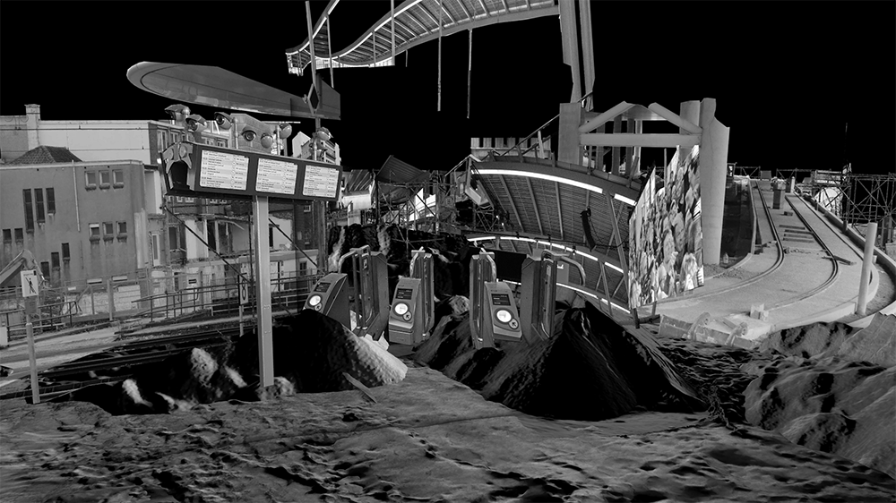
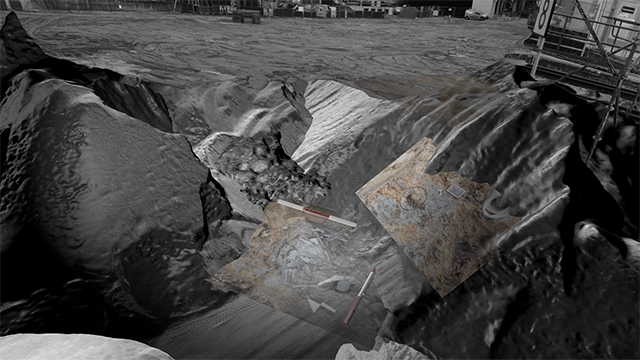

1/8
video: 10 min
2/8

3/8

4/8
5/8

6/8

7/8

8/8

'The Undesirables' is a story about the resistance between the Station and the unwanted spirits which has been going on for almost 200 years. It is based on the historical research of the Utrecht Central Station from the moment of its creation in 1843, when it was built on the place of a small cemetery for criminals.
'The Undesirables' is a metaphor, used to show how privatisation and securitisation of public spaces change their political meaning and turn them into ‘non-places’, where the entrance is not by right, but by permission. They have a departicularized character, that looks very much alike and pretends to be public. On one hand current solution (‘supervision and enforcement’) is aiming to make the urban environment safe, but on the other, it’s turning it into a space of increasing discrimination, where every individual is treated as a customer and at the same time–potential criminal.
Video installation consists of main projection, supported by a voiceover and two small screens. The main video displays a partially fictional narrative, following the timeline of real events. The scaffolding skeleton, which holds the 3-dimentional collage, combining images of architecture of the station from different periods of time, capture a building in constant flux, creating a landscape of failed attempts to resist the undesirables.
The two additional small screens show archival images and real facts, on which the story is based on.